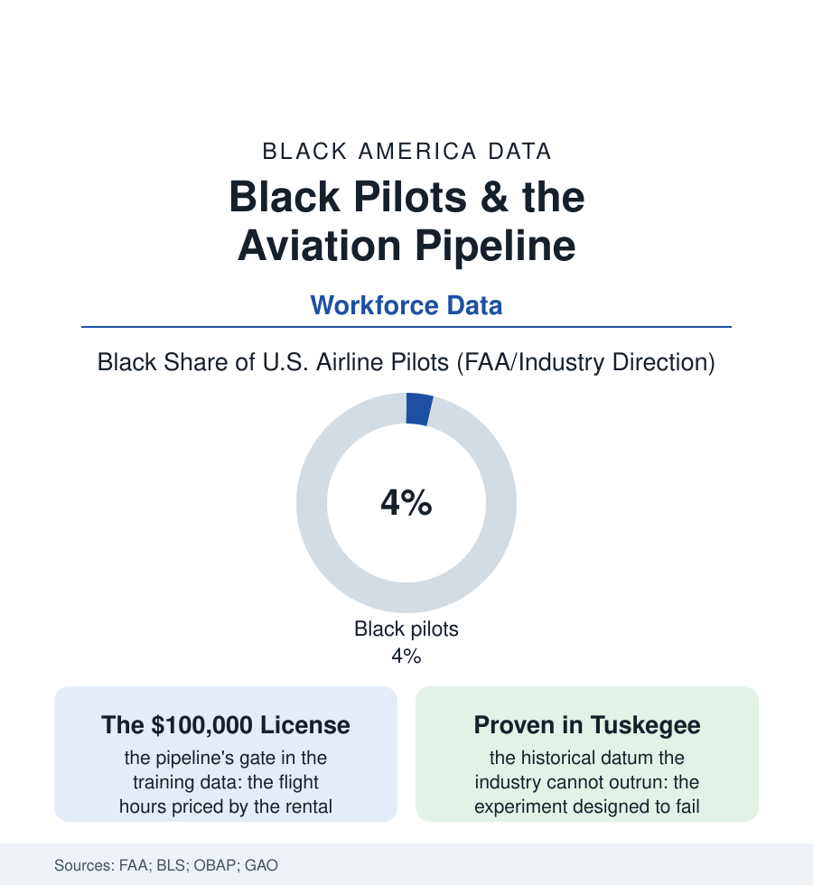

Black Employment
The Flight Deck: Black Pilots and the Aviation Pipeline
Fewer than one pilot in twenty-five is Black — in the industry the Tuskegee Airmen proved themselves in, at ruinous cost, eighty years ago. The flight deck file, from the training bill to the captain's fourth stripe.

The numbers are stark enough to state flatly: of America's airline pilots — among the best-paid union workers in the country, captains of wide-body aircraft earning deep into six figures — fewer than one in twenty-five is Black. The industry's Black founding generation earned its wings in a segregated Army program designed to disprove them. This article reads the flight deck file.
The Proof and the Closed Door
The history is the employment file's most decorated chapter and its most bitter arithmetic: the Tuskegee program's pilots compiling, under the scrutiny of an experiment their commanders expected to fail, an escort record the bomber crews requested by name — the Red Tails' data entered into the official record in blood and statistics — and the returning airmen meeting, in the postwar airline industry, a hiring line that held, essentially intact, into the 1960s (the first Black pilot hired by a major American carrier arriving in the middle of that decade, the lawsuits and the consent decrees of the 1970s prying the flight deck the way the fair-employment cases pried the railroad cab, a generation behind). The military pipeline carried what the civilian market would not: the services' flight schools — free, merit-examined, enormous — training the Black officer-pilots whose retirements seeded the airlines' slow diversification, a dependence the industry's demographics still show (the Black captain's biography running, at rates no other pipeline matches, through a squadron). The civilian route's gate is the training bill, and the file prices it without flinching: the certificates' ladder — private, instrument, commercial, the fifteen-hundred-hour rule's accumulation — rented by the flight hour at rates that carry the full sequence to the price of a house down payment in most of this atlas's cities, financed, for the students without the military or the family balance sheet, by the specialty lenders whose terms the debt file would recognize. The exposure file compounds it: the child cannot log hours toward a sky she has never entered — the discovery flights, the aviation magnet programs, the Tuskegee-descended youth academies of the OBAP network functioning as the pipeline's intake, their waiting lists measuring the demand the industry's recruiting claims to seek.
The Shortage and the Opening
The modern file turns on the industry's arithmetic: the retirement wave and the fleet growth of the GAO's workforce studies projecting the pilot shortage in the tens of thousands across the coming decade — the carriers responding with the era's full machinery (the cadet academies with the tuition financed against the job, the flow-through agreements from the regionals, the signing bonuses of the shortage years, the diversity recruiting that discovered, in the academies' applicant data, the pipeline this file describes) — the shortage accomplishing, as shortages do, what the equity arguments argued for fifty years: the gate repriced, the intake widened, the industry's own survival arithmetic aligned, briefly and really, with the file's demands. The diversification's current position in the FAA's certificate data is the honest baseline: the student-pilot certificates diversifying fastest (the pipeline's mouth wider than its throat), the airline-transport tier — the captain's certificate — moving at the speed of a thirty-year career's turnover, the flight deck of 2050 being hired, in the academies' current classes, now. The adjacent files fill the sky around the point: the controllers' and mechanics' demographics, the flight attendants' different history in the employment file's cabin chapter, the drone operators' new certificate scrambling the pipeline's bottom rung. The file closes where its history insists: an industry whose Black pioneers were required to be twice as good under fire has spent the generations since requiring their grandchildren to be twice as rich for training. The shortage is ending the second requirement the way the war should have ended the first — not by enlightenment, but by arithmetic — and the young pilots now in the academies' left seats, logging the hours their great-grandfathers were denied the chance to log, are the arithmetic made flesh.
Reading the Aviation Data
The flight deck file is the employment section at altitude: proof delivered in 1944, admission priced in 2024, the door opening at last to the sound of the industry's own need. The FAA publishes the certificates. The Red Tails published the competence, in the only peer review the era allowed — the bombers all came home.
More in Black Employment
The Black Unemployment Rate: The Two-to-One Pattern
Black unemployment runs at roughly twice the White rate — 5.5 percent against 3.3 percent in annual averages — a ratio stable across five decades of federal data. How it is measured and why it persists.
Black Median Weekly Earnings: The 80-Cent Ratio
Black full-time workers earn a median of about $900 a week — roughly 80 cents for every dollar White workers earn. The BLS earnings data by group, gender, and occupation.
Black Labor Force Participation: Working at National Rates
Black labor force participation runs at roughly the national rate — and Black women participate at higher rates than White women. The BLS participation data.
Source: FAA airman certification data; Bureau of Labor Statistics; Organization of Black Aerospace Professionals; airline diversity reporting; Government Accountability Office aviation workforce studies.